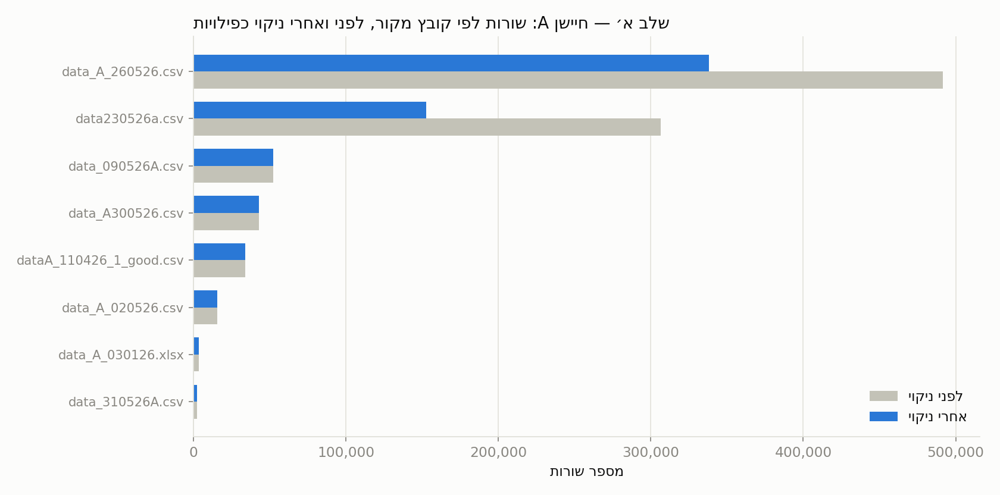
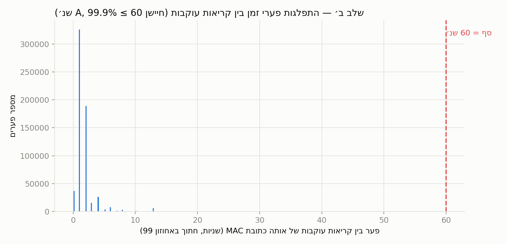
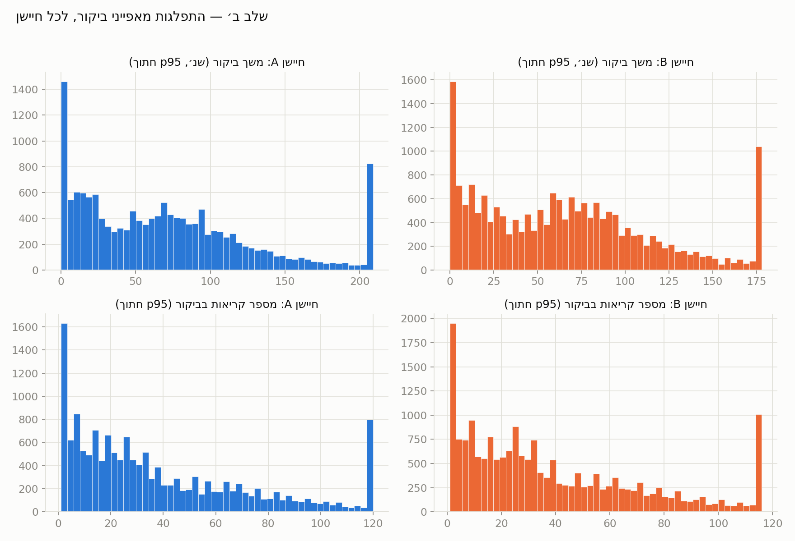
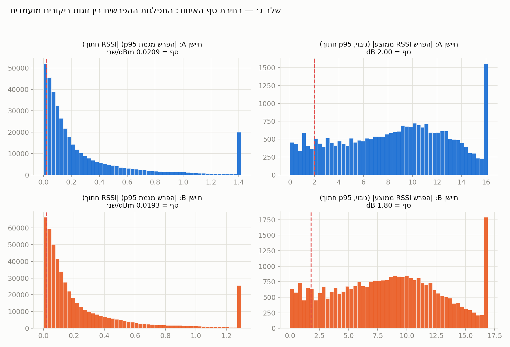
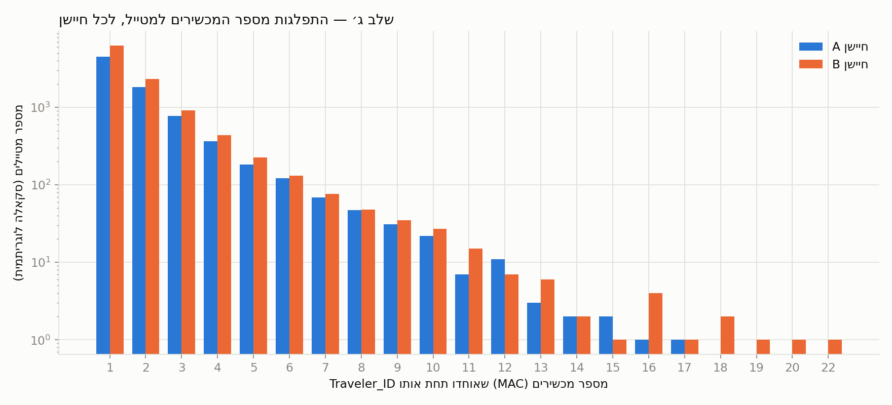
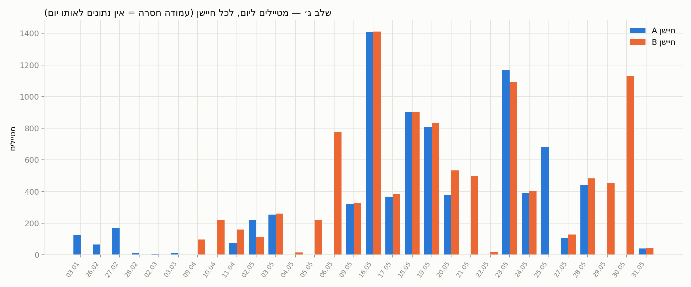

מטרת המחקר היא לפתח שיטה זולה ואמינה לספירת מטיילים בשטחים פתוחים (שמורות טבע, שבילים), המבוססת על חיישני Bluetooth Low Energy (BLE) מחוברים לבקר Arduino. חלופות כמו מצלמות או חיישני אינפרה-אדום נפסלו מראש בשל עלות, צורך בקו-ראייה ישיר, ובעיות פרטיות (צילום מבקרים); חיישני BLE פסיביים — שאינם דורשים כל פעולה מצד המטייל, אלא רק "מאזינים" לשידורי הפרסום (advertisement) שהטלפון או השעון החכם שלו משדרים ממילא — הם החלופה הזולה והלא-פולשנית ביותר.
לגישה זו שני קשיים מובנים, ששניהם גורמים לספירת יתר אם לא מטופלים:
מכיוון שאין נתוני אמת (ground truth) — אין רשימה מאומתת שמקשרת כתובת MAC
למטייל ספציפי — הפתרון חייב להתבסס על למידה בלתי מונחית (unsupervised
learning): זיהוי דפוסים בנתוני העוצמה (RSSI) והזמן בלבד, ללא תיוג חיצוני.
הפתרון נבנה כצינור עיבוד (pipeline) בן ארבעה שלבים, המתועד גם בקובץ
hiker_monitoring_project_summary.md. דוח זה מציג את המתודולוגיה
המלאה ואת כלל התוצאות של שלושת השלבים שהושלמו עד כה.
בשטח פרוסים שני חיישנים — A ו-B — במרחק קצר זה מזה לאורך אותו שביל, עם אזור חפיפה בקליטה ביניהם (הנדרש בהמשך לזיהוי כיוון תנועה, שלב ד׳). כל קריאת חיישן כוללת כתובת MAC, עוצמת קליטה (RSSI, ב-dBm) וחותמת זמן ברזולוציית שניות. הנתונים מגיעים כקבצי ייצוא (CSV/XLSX) נפרדים, שנאספו על פני תקופות שונות ואוחדו לשני קבצים מרכזיים — אחד לכל חיישן.
| מאפיין | חיישן A | חיישן B |
|---|---|---|
| טווח תאריכים גולמי | 03.01.2026 – 31.05.2026 | 09.04.2026 – 31.05.2026 |
| קבצי מקור | 8 | 7 |
| שורות גולמיות (לפני ניקוי) | 949,211 | 1,217,216 |
| שורות לאחר ניקוי כפילויות | 641,804 | 815,093 |
| כתובות MAC ייחודיות (גולמי) | 14,625 | 18,781 |
| ימי איסוף שונים בפועל | 21 | 23 |
21 + 23 גדול מ-30 (סך כל הימים השונים) מכיוון שיש חפיפה: 14 ימים נאספו בשני החיישנים במקביל (ראו סעיף 6).
| קובץ | לפני | אחרי | הוסרו |
|---|---|---|---|
data_A_260526.csv | 491,377 | 338,054 | 153,323 |
data230526a.csv | 306,652 | 152,783 | 153,869 |
data_090526A.csv | 52,526 | 52,462 | 64 |
data_A300526.csv | 43,031 | 42,972 | 59 |
dataA_110426_1_good.csv | 34,125 | 34,077 | 48 |
data_A_020526.csv | 15,567 | 15,542 | 25 |
data_A_030126.xlsx | 3,569 | 3,550 | 19 |
data_310526A.csv | 2,364 | 2,364 | 0 |
| קובץ | לפני | אחרי | הוסרו |
|---|---|---|---|
data_b_260526.csv | 507,226 | 307,464 | 199,762 |
data230526b.csv | 401,055 | 199,111 | 201,944 |
data_B_300526.csv | 166,030 | 165,849 | 181 |
data_090526B.csv | 109,719 | 109,529 | 190 |
dataB_110426_1.csv | 23,126 | 23,096 | 30 |
data_B_020526.csv | 8,055 | 8,042 | 13 |
data_B_310526.csv | 2,005 | 2,002 | 3 |
קובץ data_A_030126.xlsx: קובץ זה נוסף לאחרונה ומהווה חלון
של כשעה (11:31–12:30) בתאריך 03.01.2026 — כחודשיים לפני תחילת שאר נתוני חיישן
A. אין לתאריך זה נתוני חיישן B מקבילים, כך שהוא אינו יכול לשמש לניתוח כיוון
תנועה (שלב ד׳) ומדווח כאן רק בהיבט הספירה החד-חיישנית.
להביא את נתוני שני החיישנים למצב "נקי" ואחיד: ללא כפילויות, וממוין כרונולוגית, כבסיס לכל שלבי ההמשך.
קבצי המקור הם לעיתים ייצוא מצטבר (cumulative export) של אותו יומן מכשיר —
קובץ שנשמר בתאריך מאוחר יותר מכיל בתוכו את כל השורות שכבר היו בקובץ מוקדם יותר,
בנוסף לשורות חדשות (לדוגמה: data230526a.csv הוא כמעט תת-קבוצה
מלאה של data_A_260526.csv). כתוצאה מכך, איחוד פשוט של כל הקבצים
יוצר כפילויות מדויקות של אותה קריאה ממש. הניקוי מתבצע על ידי הגדרת "מפתח זהות"
לכל קריאה — השילוש (MAC, RSSI, timestamp) — והסרת כל שורה שהמפתח
שלה כבר הופיע קודם באוסף (drop_duplicates לפי שלושת העמודות יחד,
תוך שמירה על השורה הראשונה בלבד).
מפתח מדויק בן שלוש עמודות (ולא, למשל, רק MAC וזמן) נבחר במכוון: שתי קריאות עוקבות של אותו MAC באותה שנייה בדיוק עם עוצמות RSSI שונות הן קריאות אמיתיות ושונות (רעש טבעי בסריקת BLE), ולא כפילות-ייצוא — ומיזוגן היה גורם לאובדן מידע אמיתי. בפרויקט זה כבר נתקלנו במעבר מגרסת קלט ישנה שרשמה רק דקות (ללא שניות) לגרסה נוכחית שרושמת שניות מדויקות לכל שורה; כאשר הזמן היה ברזולוציית דקה, אותו מפתח דדופ יצר ספירת חסר (קריאות אמיתיות שונות באותה דקה התנגשו ונחשבו בטעות לכפילות). כעת, כשכל שמונת/שבעת קבצי המקור כוללים שניות מדויקות, מפתח הזהות המדויק הזה בטוח ומדויק.
| חיישן | שורות לפני ניקוי | שורות אחרי ניקוי | כפילויות שהוסרו | אחוז שהוסר |
|---|---|---|---|---|
| A | 949,211 | 641,804 | 307,407 | 32.4% |
| B | 1,217,216 | 815,093 | 402,123 | 33.0% |
כשליש מהשורות בכל חיישן הן כפילויות-ייצוא — עקבי בין שני החיישנים, תומך בכך שהתופעה נובעת משיטת הייצוא ולא מתקלה נקודתית בקובץ בודד.

data_A_260526, data230526a) מאבדים הכי הרבה שורות — עקבי עם
היותם ייצוא מצטבר של אותו יומן.| קובץ | תיאור |
|---|---|
DATA/sensor_A_deduped.csv / .parquet | 641,804 שורות — נתוני חיישן A לאחר ניקוי |
| (ניקוי חיישן B מבוצע כצעד מקדים בתוך שלב ב׳) | 815,093 שורות |
לקבץ קריאות RSSI גולמיות של אותה כתובת MAC, בכל חיישן בנפרד, ל"ביקורים" (sessions) רציפים — פרק זמן אחד שבו המכשיר היה בטווח הקליטה — ולחלץ עבור כל ביקור מאפיינים מסכמים שישמשו את שלב האיחוד (שלב ג׳).
עבור כל כתובת MAC בנפרד, ממיינים את הקריאות לפי זמן ומודדים את הפער (בשניות) בין כל קריאה לקודמתה. כאשר הפער עולה על סף של 60 שניות, נפתח ביקור חדש. זהו למעשה אלגוריתם קיבוץ חד-מימדי (מרחק = זמן בלבד) מסוג "שרשור פשוט" ברמת כל MAC בנפרד — פשוט מ-DBSCAN, אך יעיל באותה מידה כשהמימד הוא זמן בלבד ומסודר. לכל ביקור מחושבים: זמן התחלה/סיום, משך, מספר קריאות, RSSI ממוצע, ומגמת RSSI — שיפוע קו הרגרסיה הליניארית (least squares) של RSSI כנגד הזמן בתוך הביקור, ביחידות dBm/שנייה.
הסף נקבע אמפירית מתוך התפלגות הפערים בין קריאות עוקבות באותו MAC: החציון הוא שנייה אחת בלבד, ו-99.9% מהפערים קטנים או שווים ל-60 שניות. זוהי נקודת החיתוך הטבעית בין "המכשיר עדיין נמצא באזור הקליטה" (פערים קצרים, תואמים למרווחי פרסום BLE טיפוסיים) לבין "המכשיר עזב וחזר" (פערים ארוכים בהרבה — לרוב ימים שלמים בין ביקורים). מגמת ה-RSSI נבחרה כמאפיין מרכזי מכיוון שהיא אינה תלויה בעוצמת השידור המוחלטת של המכשיר (שמשתנה בין דגמים) — היא לוכדת רק את הכיוון (מתקרב/מתרחק), שהוא בדיוק המידע הדרוש כדי לזהות בהמשך אם שתי "כתובות" שונות בעצם מתארות את אותה תנועה פיזית.
| חיישן | קריאות (לאחר ניקוי) | ביקורים (sessions) | ביקורי קריאה-בודדת | ביקורי רב-קריאה |
|---|---|---|---|---|
| A | 641,804 | 15,267 | 649 (4.3%) | 14,618 |
| B | 815,093 | 19,359 | 801 (4.1%) | 18,558 |


| קובץ | תיאור |
|---|---|
DATA/sessions_sensor_A / B .csv / .parquet | טבלת ביקורים לכל חיישן, עם כל המאפיינים |
לאחד כתובות MAC שונות ששייכות ככל הנראה לאותו מטייל פיזי (בשל ריבוי מכשירים
או שינוי MAC באמצע ביקור) תחת מזהה מטייל יחיד (Traveler_ID).
הפעולה מתבצעת בנפרד עבור כל חיישן.
שלב 1 — חסימה בזמן (Blocking): השוואת כל זוג ביקורים אפשרי בכל הנתונים היא O(n²) ובלתי אפשרית בפועל (מיליוני זוגות). לכן, ביקורים מחולקים תחילה ל"בלוקים" רציפים בזמן — כל אימת שיש פער של יותר מ-60 שניות בין סיום הבלוק הנוכחי לתחילת הביקור הבא, נפתח בלוק חדש. השוואות מבוצעות רק בתוך אותו בלוק, מה שהופך את הבעיה למעשית מבחינה חישובית.
שלב 2 — קריטריון האיחוד: שני ביקורים מועמדים לאיחוד אם (א) הם חופפים בזמן או שהפער ביניהם קטן מ-60 שניות, וגם (ב) ההפרש במגמת ה-RSSI שלהם קטן מסף מסוים. עבור ביקורי קריאה-בודדת (שאין להם מגמה מוגדרת) מופעל מנגנון גיבוי: השוואת RSSI הממוצע במקום המגמה. לא נעשה שימוש במרחק משוקלל יחיד המשלב זמן ו-RSSI (כפי שנהוג ב-DBSCAN קלאסי), כדי להימנע מהצורך להמציא משקל שרירותי בין שתי יחידות מידה שונות לחלוטין (שניות מול dBm/שנייה) ללא נתוני אמת לכיול המשקל הזה.
שלב 3 — קביעת הסף: סף הדמיון במגמה (וב-RSSI הממוצע, במנגנון הגיבוי) נקבע כאחוזון ה-10 של התפלגות ההפרשים בין כל זוגות הביקורים המועמדים — בחירה שמרנית שמעדיפה לפספס איחודים אמיתיים (false negative) על פני ליצור איחוד שגוי (false positive), מכיוון שאין נתוני אמת לכייל סף מדויק יותר.
שלב 4 — קיבוץ (Clustering): בתוך כל בלוק, מבוצע קיבוץ היררכי (hierarchical clustering) בשיטת Complete-Linkage ("מרחק מקסימלי"): קבוצה מתקבלת רק אם כל הזוגות בתוכה — לא רק זוגות סמוכים — עומדים בסף הדמיון. זו הכרעה מתודולוגית מרכזית: בשיטת Single-Linkage ("שרשור פשוט", כל זוג סמוך בשרשרת) מספיק ששני ביקורים סמוכים יהיו דומים כדי שיתמזגו, כך שקצוות רחוקים בשרשרת (ביקור 1 מול ביקור 400+) עלולים להתמזג בעקיפין אף שאינם דומים כלל זה לזה — תופעה שנצפתה בפועל בבדיקות המוקדמות של שיטה זו (קבוצה של מאות ביקורים עם טווח מגמות בלתי סביר לחלוטין עבור אדם אחד). Complete-Linkage חסין לבעיה זו במבנה שלו.
| חיישן | ביקורים | מטיילים (Traveler_ID) | איחודים שבוצעו | הקבוצה הגדולה ביותר |
|---|---|---|---|---|
| A | 15,267 | 7,961 | 7,306 | 17 מכשירים |
| B | 19,359 | 10,516 | 8,843 | 22 מכשירים |
סף הדמיון שחושב בפועל (אחוזון 10):
| חיישן | סף הפרש מגמת RSSI | סף גיבוי (הפרש RSSI ממוצע) |
|---|---|---|
| A | 0.0209 dBm/שנייה | 2.00 dB |
| B | 0.0193 dBm/שנייה | 1.80 dB |


| חיישן | Traveler_ID | מכשירים | תחילת ביקור | סיום ביקור | משך כולל (שנ׳) |
|---|---|---|---|---|---|
| A | A-198-47 | 17 | 19.05.2026 10:31:50 | 19.05.2026 10:42:23 | 3,441 |
| A | A-329-121 | 16 | 25.05.2026 11:03:56 | 25.05.2026 11:28:17 | 5,679 |
| B | B-630-88 | 22 | 30.05.2026 13:25:21 | 30.05.2026 13:29:59 | 2,929 |
| B | B-630-76 | 20 | 30.05.2026 13:23:16 | 30.05.2026 13:30:03 | 2,954 |
| קובץ | תיאור |
|---|---|
DATA/sessions_sensor_A/B_with_traveler .csv/.parquet | טבלת ביקורים + עמודת Traveler_ID |
DATA/travelers_sensor_A/B .csv/.parquet | טבלת סיכום ברמת המטייל (מספר מכשירים, טווח זמן וכו׳) |
DATA/travelers_per_day .csv/.parquet | מספר מטיילים ליום, לכל חיישן |
מספר המטיילים הייחודיים (לאחר איחוד זהויות) שזוהו בכל יום איסוף, בכל חיישן
בנפרד. "היום" של מטייל נקבע לפי תאריך תחילת הביקור (start_time);
נבדק ואומת שאף ביקור, בשני החיישנים, אינו חוצה חצות — כך שההקצאה ליום חד-משמעית.

| תאריך | מטיילים — חיישן A | מטיילים — חיישן B |
|---|---|---|
| 03.01.2026 | 125 | |
| 26.02.2026 | 66 | |
| 27.02.2026 | 170 | |
| 28.02.2026 | 10 | |
| 02.03.2026 | 7 | |
| 03.03.2026 | 10 | |
| 09.04.2026 | 97 | |
| 10.04.2026 | 219 | |
| 11.04.2026 | 77 | 160 |
| 02.05.2026 | 220 | 114 |
| 03.05.2026 | 255 | 261 |
| 04.05.2026 | 16 | |
| 05.05.2026 | 221 | |
| 06.05.2026 | 778 | |
| 09.05.2026 | 322 | 326 |
| 16.05.2026 | 1,410 | 1,412 |
| 17.05.2026 | 368 | 387 |
| 18.05.2026 | 902 | 901 |
| 19.05.2026 | 808 | 834 |
| 20.05.2026 | 380 | 533 |
| 21.05.2026 | 499 | |
| 22.05.2026 | 18 | |
| 23.05.2026 | 1,167 | 1,095 |
| 24.05.2026 | 390 | 404 |
| 25.05.2026 | 683 | |
| 27.05.2026 | 107 | 128 |
| 28.05.2026 | 444 | 484 |
| 29.05.2026 | 454 | |
| 30.05.2026 | 1,130 | |
| 31.05.2026 | 40 | 45 |
| שלב | תיאור | סטטוס |
|---|---|---|
| א׳ | ניקוי והכנת נתונים | הושלם |
| ב׳ | חלוקה לביקורים והנדסת מאפיינים | הושלם |
| ג׳ | איחוד זהויות (Traveler_ID) | הושלם |
| ד׳ | זיהוי כיוון תנועה (ΔRSSI בין החיישנים) | טרם תוכנן |
שלב ד׳ ישתמש בהפרש העוצמה בין שני החיישנים (ΔRSSI = RSSI_B − RSSI_A)
באזור החפיפה הפיזי כדי לקבוע כיוון הליכה: אם ΔRSSI עובר ממינוס (A חזק יותר)
לפלוס (B חזק יותר) ככל שהמטייל מתקדם, ניתן להסיק כיוון הליכה מבלי להסתמך
על סנכרון מיקרו-שניות מדויק בין החיישנים. השלב ידרוש בנוסף התאמה בין-חיישנית
בין מטיילים שזוהו בחיישן A למטיילים שזוהו בחיישן B (קישור זהויות חוצה-חיישן) —
משימה שלא טופלה במכוון בשלב ג׳, שם כל חיישן עובד באופן בלתי-תלוי. יש לשים לב
שהשלב הזה יהיה ישים רק על 14 הימים המשותפים לשני החיישנים; שאר 16 הימים
(כולל קובץ 03.01.2026 החדש) לא יוכלו לקבל תוצאת כיוון-תנועה כלל.